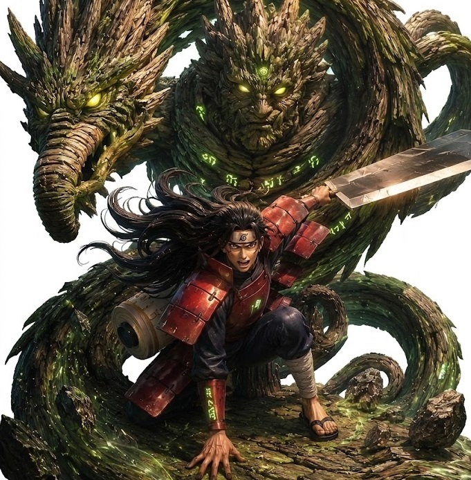
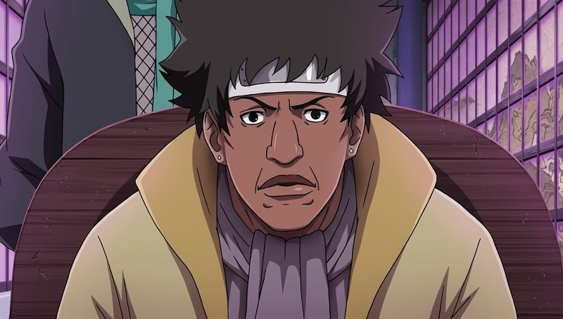
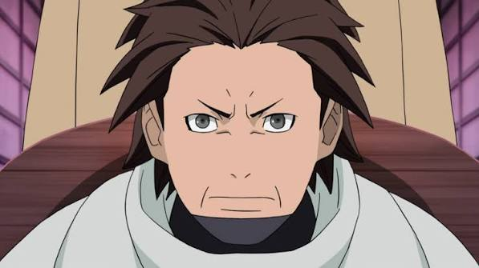
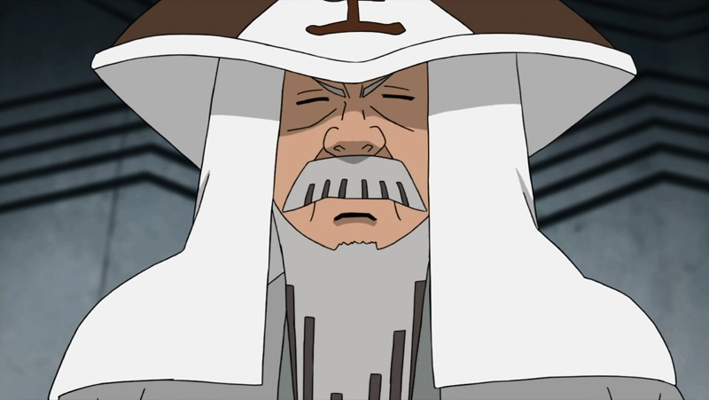
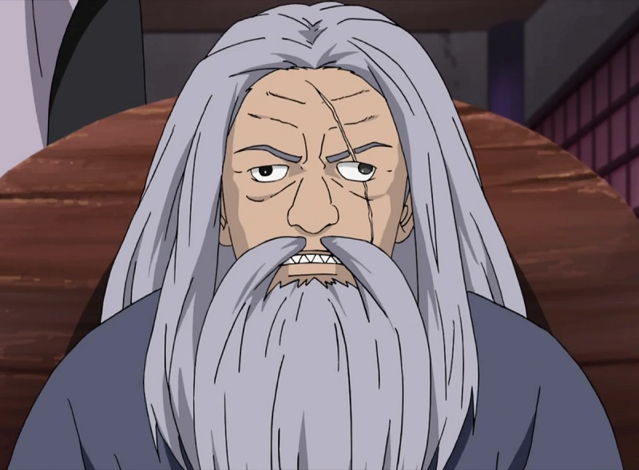

Antes de Naruto, Naruto Shippuden e das gerações que conhecemos, o mundo ninja passou por uma transformação gigantesca: os antigos clãs começaram a abandonar décadas de guerras e deram origem às grandes vilas shinobi.
No centro dessa mudança estavam os primeiros Kages, líderes que ajudaram a estabelecer o modelo político e militar que dominaria o mundo ninja durante décadas.
Mas existe uma pergunta que poucos conteúdos conseguem responder de maneira justa: qual dos cinco primeiros Kages era realmente o mais poderoso?
"Hashirama está em outro nível. A verdadeira discussão começa quando tentamos descobrir quem vinha depois dele."
Quem Foram os Cinco Primeiros Kages?
A primeira geração dos grandes Kages era formada por cinco personagens fundamentais para a história das suas respectivas vilas: Hashirama Senju, Primeiro Hokage; Byakuren, Primeiro Mizukage; Reto, Primeiro Kazekage; Ishikawa, Primeiro Tsuchikage; e o Primeiro Raikage, fundador de Kumogakure.
Existe uma diferença importante entre eles e os Kages que apareceram posteriormente. A maioria desses pioneiros recebeu pouquíssimo tempo de tela, então não é possível avaliar todos usando apenas batalhas demonstradas.
⚔️ Como será a comparação?
- Força e poder destrutivo
- Quantidade e qualidade de chakra
- Velocidade e resistência
- Inteligência e experiência
- Versatilidade das técnicas
- Feitos comprovados na história
1º Lugar — Hashirama Senju

Se existe uma posição praticamente impossível de contestar, é a primeira. Hashirama Senju está muito acima dos outros primeiros Kages quando consideramos os feitos apresentados em Naruto e Naruto Shippuden.
O Primeiro Hokage ficou conhecido como o Deus dos Shinobi e possuía uma combinação extremamente rara: enormes reservas de chakra, Mokuton, regeneração natural e capacidade de utilizar o Modo Sábio.
Seu maior feito foi enfrentar Madara Uchiha durante o Vale do Fim. Madara contava com a Kurama sob seu controle, mas Hashirama conseguiu derrotá-lo.
Além disso, suas técnicas de Mokuton eram tão poderosas que ele conseguia conter e controlar o chakra das Bestas com Cauda. O Shin Sūsenju, uma das suas técnicas mais impressionantes, colocava Hashirama em uma escala de poder completamente diferente.
🔥 O arsenal de Hashirama
- Mokuton em escala gigantesca
- Modo Sábio
- Regeneração extraordinária
- Reservas enormes de chakra
- Capacidade de conter Bijū
- Experiência desde a Era dos Estados Combatentes
Veredito: Hashirama não é apenas o primeiro colocado. Ele é o único dos cinco que possui feitos suficientes para colocá-lo com segurança em uma categoria própria.
2º Lugar — Primeiro Raikage

Aqui começa a verdadeira discussão. O Primeiro Raikage é um dos personagens mais misteriosos dessa geração. Ele foi responsável pela fundação de Kumogakure, mas a obra praticamente não mostrou suas batalhas.
Isso significa que colocá-lo em segundo lugar envolve uma dose considerável de estimativa. A tradição dos Raikages é marcada por velocidade, força física, resistência e técnicas de relâmpago, mas não podemos simplesmente atribuir ao Primeiro Raikage todas as habilidades que seus sucessores demonstraram.
Ainda assim, seu papel como fundador de uma das cinco grandes vilas indica que ele estava entre os shinobi mais importantes e poderosos de sua época.
Veredito: potencialmente o segundo mais forte, mas com uma margem de incerteza muito maior do que no caso de Hashirama.
3º Lugar — Reto, Primeiro Kazekage

Reto foi o fundador de Sunagakure e conseguiu reunir os shinobi espalhados pelo deserto sob uma única bandeira. Apesar da importância histórica, seus feitos de combate são extremamente limitados.
Durante a primeira reunião dos Kages, Reto demonstrou que não estava disposto a simplesmente aceitar qualquer acordo proposto por Hashirama. Ele defendia os interesses de Sunagakure e entendia a importância estratégica das Bestas com Cauda.
O grande problema para qualquer ranking é simples: sabemos que Reto era poderoso, mas não sabemos exatamente o quanto.
Por isso, colocá-lo em terceiro é uma avaliação baseada em sua posição histórica e nas informações disponíveis, e não em uma grande luta mostrada no anime.
4º Lugar — Ishikawa, Primeiro Tsuchikage

Ishikawa fundou Iwagakure e foi o primeiro líder da Vila da Pedra. Entre suas habilidades conhecidas está o uso do Estilo Terra e da técnica que permite reduzir o peso do próprio corpo, proporcionando mobilidade aérea.
Esse detalhe é importante porque torna Ishikawa um combatente potencialmente muito difícil de enfrentar: a capacidade de lutar pelo ar proporciona uma vantagem enorme contra adversários presos ao solo.
Entretanto, existe uma confusão comum entre os fãs. Ishikawa não deve receber automaticamente o Jinton de Mū e Ōnoki. O fato de ser o Primeiro Tsuchikage não significa que possuía todas as técnicas desenvolvidas pelos Tsuchikage posteriores.
Seu potencial parece alto, mas a falta de feitos concretos impede uma posição mais elevada com segurança.
5º Lugar — Byakuren, Primeiro Mizukage

Byakuren foi o fundador de Kirigakure e participou da primeira reunião dos cinco Kages. Ele representava uma vila que, posteriormente, ficaria famosa por sua tradição de espadachins e pelo estilo brutal de treinamento.
O problema é que conhecemos muito pouco sobre suas técnicas de combate. A história apresenta sua importância política e histórica, mas não entrega uma grande batalha que permita medir seu poder.
Portanto, colocá-lo em quinto não significa afirmar que Byakuren era fraco. Significa apenas que temos menos evidências para colocá-lo acima dos outros primeiros Kages.
"O ranking é muito mais seguro no primeiro lugar do que do segundo ao quinto."
Ranking Final dos Primeiros Kages
Considerando os feitos conhecidos, as habilidades confirmadas e evitando atribuir técnicas que nunca foram mostradas, chegamos a uma classificação aproximada:
🏆 Ranking
- 1º — Hashirama Senju: nível excepcional, com feitos muito acima dos demais.
- 2º — Primeiro Raikage: grande potencial, mas poucos feitos conhecidos.
- 3º — Reto: fundador de Sunagakure e poderoso, porém pouco explorado.
- 4º — Ishikawa: grande mobilidade e domínio de técnicas de Terra, mas poucos feitos.
- 5º — Byakuren: fundador de Kirigakure, com capacidades de combate pouco conhecidas.
Quem Venceria em Uma Batalha?
Se os cinco primeiros Kages fossem colocados em uma batalha individual, Hashirama seria o favorito absoluto. Sua capacidade de controlar o campo de batalha e enfrentar adversários que utilizavam o poder de uma Bijū torna sua posição muito difícil de contestar.
A luta pelo segundo lugar, entretanto, seria muito mais especulativa. O Primeiro Raikage poderia levar vantagem em um confronto direto caso possuísse capacidades semelhantes às associadas à tradição dos Raikages.
Reto poderia ser especialmente perigoso em seu próprio território, enquanto Ishikawa teria uma vantagem importante graças à mobilidade aérea. Byakuren é o maior ponto de interrogação porque simplesmente não temos informações suficientes sobre seu arsenal.
Por Que Hashirama Estava Tão Acima dos Outros?
Essa comparação ajuda a entender uma característica importante da história de Naruto: Hashirama não era simplesmente um Kage poderoso.
Ele era o padrão que outros shinobi precisavam considerar ao avaliar o equilíbrio de poder do mundo ninja. Sua força foi tão extraordinária que ele conseguiu distribuir as Bestas com Cauda entre as nações, criando uma espécie de equilíbrio militar entre as grandes vilas.
Existe, inclusive, uma contradição interessante nessa história. Hashirama queria utilizar a cooperação entre as vilas para criar uma era de paz, mas o sistema acabou dependendo justamente da existência de grandes forças militares e das Bestas com Cauda.
O sonho de paz do Primeiro Hokage ajudou a criar o mundo que conhecemos em Naruto, mas também estabeleceu algumas das estruturas que continuariam alimentando a competição entre as nações.
O Que Torna os Primeiros Kages Tão Interessantes?
Talvez a parte mais curiosa dessa comparação seja perceber o quanto esses personagens permanecem desconhecidos. Hashirama recebeu batalhas memoráveis e foi fundamental para a história principal. Os outros quatro, porém, ficaram muito mais restritos ao papel de figuras históricas.
Isso significa que qualquer ranking do segundo ao quinto lugar deve ser tratado como uma análise, e não como uma verdade absoluta estabelecida pelo mangá.
O único ponto realmente seguro é o topo: Hashirama Senju foi o primeiro Kage mais poderoso e, provavelmente, o mais dominante entre todos os líderes da sua geração.
"Entre os cinco primeiros Kages, a maior batalha não é descobrir quem ficou em primeiro — é descobrir quem realmente poderia chegar perto de Hashirama."
Conclusão
Os primeiros Kages representam uma das fases mais importantes da história de Naruto. Eles não apenas lideraram vilas: ajudaram a transformar um mundo dominado por guerras entre clãs em um sistema baseado nas grandes nações shinobi.
Quando o assunto é poder, Hashirama reina com enorme vantagem. Já os outros quatro permanecem cercados por perguntas que a obra nunca respondeu completamente.
E talvez seja justamente isso que torna essa geração tão interessante: sabemos o legado que eles deixaram, mas nunca descobrimos completamente do que eram capazes.
Artigos Relacionados